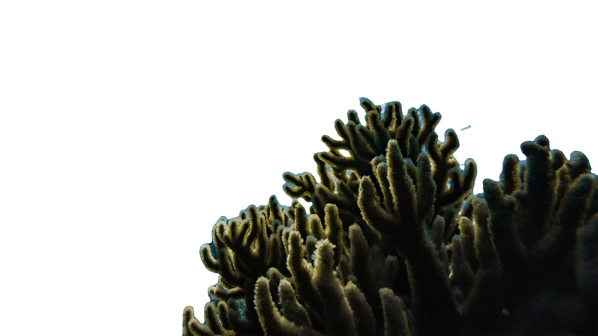
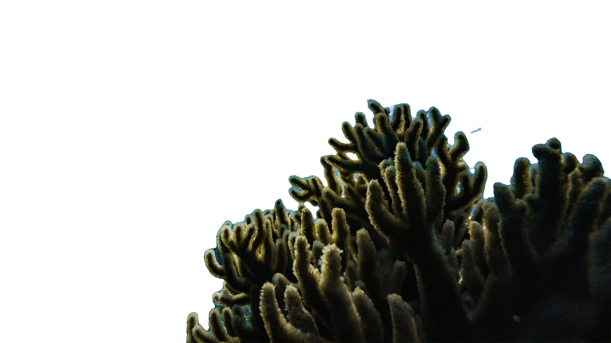

More than three billion people rely on the ocean for their livelihoods - the vast majority in developing countries. In many of those, ocean-based industries such as tourism and fisheries are key sources of income and jobs. Too often, however, these have expanded without sufficient consideration for environmental and social sustainability, creating low paying jobs and leading to environmental degradation.